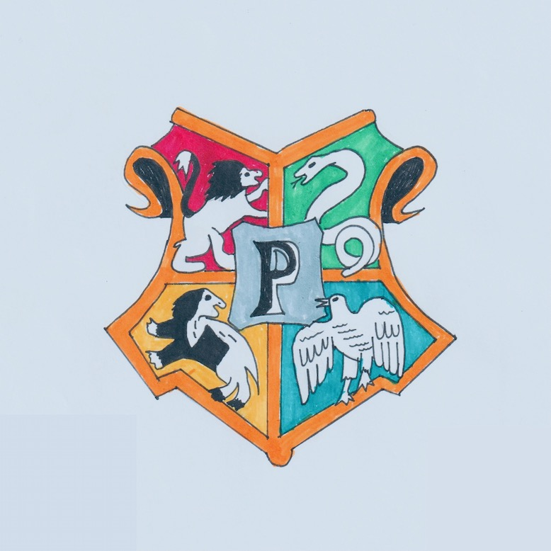
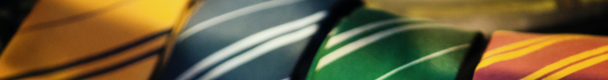

Le podcast des fans d'Harry Potter et des Animaux Fantastiques !


Épisode 0 : Bienvenue sur FRP
new
2022-06-01
Bienvenue sur FRP, la fréquence radio de Poudlard, un podcast sur Harry Potter et les animaux fantastiques.
Je m'appelle Arthur et je suis le sorcier de ce podcast.
Enfourchez vos balais et direction Poudlard !
…